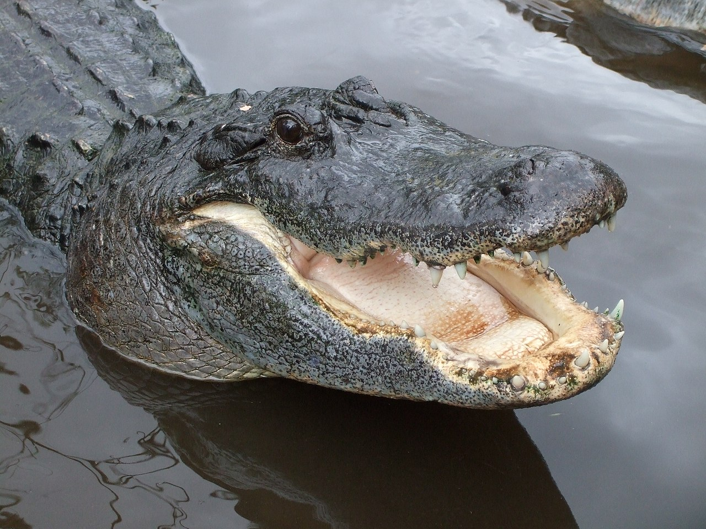

2. Karl
Meet Mella & Karl, both we were rescued in 2012 and they have been our protectors as well as best friends since we rescued them!!
Monkeys
Monkey Facts
-
1. Cookie
2. Earl
3. Banana Pudding
Meet our 3 musketeers! All 3 of our monkeys were rescued in Brazil from deforestation and gave them a home here!!
Alligators
Alligator Facts  1. Wren2. Aspen
3. Mika
Meet some of the fresh water's fiercest predator today that currently roams the waters of most tropical climates! Scary!